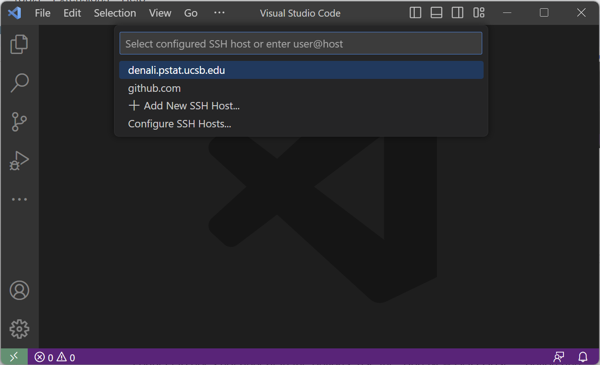

Prereqs
- Completion of SSH Setup (including GitHub)
- Latest version of Git
- A GitHub account
- VS Code text editor
Requirements for local
- Latest version of Docker (temp link)
Requirements for remote
- Setup of the UCSB VPN for connecting to PSTAT servers
- SSH Setup (key generation and GitHub) on the remote server
First, we need to install some necessary extensions on VS Code enable features for dev container and remote development management. You will need the following extensions:
- Remote Development Pack - SSH + Dev Containers
- Jupyter - Notebook support
- Python - Intellisense, linting, debugging
You can install these by following the links and clicking "Install" on your browser or you can look them up on VS Code Extension search (using ctrl/⌘ + shift + x shortcut).
If you are planning to run your code via a remote computing server (PSTAT Denali, NSF Jetstream, AWS, etc.), you will first need to connect to your remote server. With our VS Code extensions, this is made simple:
- Click on the bottom right button to "Open a Remote Window". This will launch the VS Code command palette for remote connections:

- Select "Connect Current Window to Host..." option.

- From here select the host you wish to connect to. If the remote host that you want to connect to does not appear in the options, use the "Add New SSH Host..." option and follow the prompts to set one up (More information about different server options can be found in the Remote Servers documentation entry).

- From here, VS Code will automatically connect to the host for you. If this is your first time connecting to any remote server, it may take a few seconds for VS Code to install configurations in the background. You may also be prompted about the type of operating system your server uses. Please refer to your server's configuration for this information. Once the set up is complete you will be greeted with a similar window:

Now we are ready to clone and run an initial container setup from GitHub to use both locally and remotely.
- Using the sidebar, click on "Source Control" button (or using keyboard shortcut
ctrl/⌘ +shift+g):

- Click on Clone Repository. This will open a Command Palette with an option to provide a GitHub URL.

- For an initial dev container setup for Python/R development go to https://github.com/syoh/jupyter-rootless-docker (make sure you are signed in). Click on "Code" then "SSH" and copy the link:

- Select the "Clone from GitHub" option. Allow the extension to sign in using GitHub.

- Once GitHub sign-in is complete, paste the GitHub link into the command palette:

- You will be asked to choose a location to clone the repository into. On a local machine this will open your file explorer. On a remote server it will open another command palette with your current working directory. Depending on how you wish to setup your directories, you may need to create additional folders as you see fit.
- Once cloned, you will be prompted on whether you wish to open the cloned repository. Select "Open":

- Once the directory is open, you will have a dialogue box pop up to "Reopen in Container". Click this option and wait for the setup to complete. This will take a little bit of time so hang tight! You can press the "Show log" dialogue to track the progress.